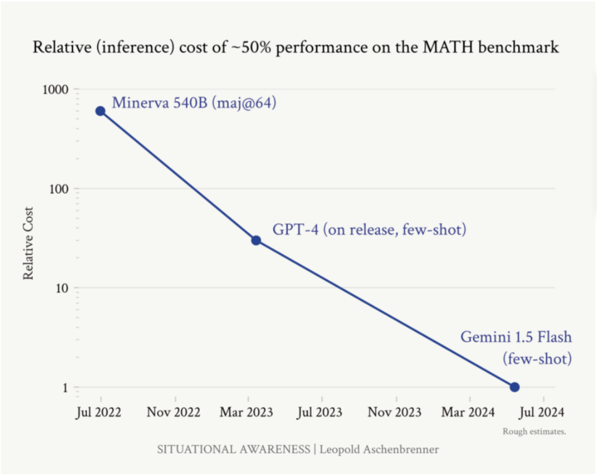
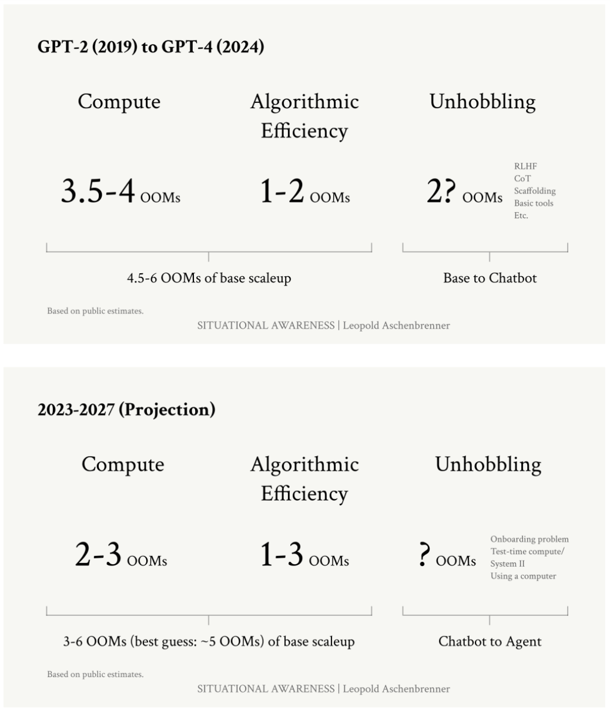

Executive Summary
Goldman Sachs' (GS) recent GenAI report highlights two pessimistic outlooks on the future of AI development. In this article, we contrast these viewpoints with the opinions held by scaling-law optimists.
- Economic Impact: GS predicts modest impact (0.53% TFP gain over 10 years), while optimists expect transformative change.
- Cost vs. Benefit: GS sees high costs and limited benefits, while optimists point to rapidly decreasing costs and increasing capabilities.
- Progress Rate: GS expects slow progress, while optimists predict rapid advancements based on scaling trends.
- Task Automation: GS predicts limited automation (4.6% of tasks by 2034), while optimists expect widespread automation of cognitive tasks.
- Transformative Potential: GS doubts AI's ability to replace human reasoning, while optimists foresee AGI by as soon as 2027.
Introduction
Last month, two starkly contrasting visions of AI's future emerged. On one side, a starry-eyed boy-genius is claiming "AGI by 2027" and advocating for large-scale multinational mobilization. On the other, two old-school industry experts argue that GenAI is nothing more than a growing bubble, ripe for bursting.
For the AGI-is-imminent camp, humanity is hurtling towards superintelligence at a breakneck pace. The GenAI-is-a-bubble camp, however, contends that despite the substantial capital being poured into AI development, the estimated $1tn worth of incoming investment will ultimately fail to return a sufficient return on investment.
In this article, we'll explore these divergent viewpoints.
...
Background
On June 4th, 2024, former OpenAI Superalignment team member Leopold Aschenbrenner released Situational Awareness: The Decade Ahead, a five-part series outlining his grand vision for the future of AI development. Aschenbrenner's timeline is ambitious:
- "AGI by 2027 is strikingly plausible."
- "AI progress won't stop at human-level. Hundreds of millions of AGIs could automate AI research, compressing a decade of algorithmic progress (5+ OOMs) into ≤1 year"
- "As the race to AGI intensifies ... by 27/28 we'll get some form of government AGI project. No startup can handle superintelligence. Somewhere in a SCIF, the endgame will be on."
Just three weeks later, Goldman Sachs released their report presenting some far more pessimistic outlooks on AI's potential. While most interviews in the report were cautious, MIT Professor Darron Acemoglu and Goldman Sachs Head of Global Equity Research Jim Covello stood out for their particularly skeptical views on GenAI's future.
In the following sections, we'll explore the key differences between Aschenbrenner, Acemoglu, and Covello's perspectives to understand where the lines are drawn. While , I've yet to find a thorough examination of the Goldman Sachs' skeptics' arguments. Therefore, I'll provide additional commentary on what I believe to be flaws in the Bubble camp's reasoning.
Note: An Order of Magnitude (OOM) is a 10x increase. For example, a 5 OOM increase signifies to a 10^5 = 100,000x increase in capabilities. This is typically measured in terms of computational efficiency.
Key Disagreements
Skepticism of AI's Economic Impact
In his paper, The Simple Macroeconomics of AI, Darron Acemoglu predicts a modest impact, estimating He assumes . In his interview with GS, Jim Covello also doubts AI's ability to improve employee productivity, stating: "I don't think the technology is, or will likely be, smart enough to make employees smarter."
In stark contrast, Aschenbrenner predicts a massive economic impact, suggesting "AGI by 2027 is strikingly plausible" and envisioning "Hundreds of millions of AGIs could automate AI research, compressing a decade of algorithmic progress (5+ OOMs (Orders of Magnitude)) into ≤1 year." An automated AI research workforce would not only have a transformative effect on our economy, but it may alter the meaning of the Human condition as a whole.
High Costs vs. Limited Benefits
Acemoglu believes costs won't significantly decrease, excluding cost reductions entirely from his 10-year forecast (!!!). Covello estimates a $1 trillion AI infrastructure buildout, questioning what "$1 trillion problem" AI will solve. He claims current AI applications are inefficient, citing examples where AI updates data "more quickly than doing so manually, but at six times the cost."
Aschenbrenner argues the opposite -- costs are already rapidly decreasing:
- "...enormous amounts of algorithmic progress is possible and happening in general."
- "...it's often the case that an algorithmic improvement is both a training efficiency gain and an inference efficiency, for example by reducing the number of parameters necessary."
- GPT-4 on release cost ~the same as GPT-3 when it was released, despite an enormous performance increase.
- Since GPT-4 release, prices have fallen another 6x/4x (input/output) with the release of 4o.
- Gemini 1.5 Flash offers GPT-3.75 level performance, while costing 85x/57x less than the original GPT-4.

Figure 1: In less than two years, we have experienced almost an 1000x decrease in the cost of models with similar capabilities. (Source: Situational Awareness)
Slow Progress Expectations
Acemoglu . Covello believes progress will be slow due to .
Aschenbrenner predicts rapid progress, extrapolating from current scaling trends and expecting "3-6 OOMs of base effective compute scaleup" by the end of 2027. Again, 3-6 OOMs means 1,000x - 1,000,000x!

Figure 2: Best estimates for projected base effective compute scaleups. (Source: Situational Awareness)
Limited Task Automation
Acemoglu predicts AI will only perform 4.6% of total tasks in the current economy by 2034 and assumes AI won't create any new tasks or products. Covello believes AI is limited in complex tasks, stating "Even basic summarization tasks often yield illegible and nonsensical results".
Aschenbrenner predicts widespread automation, stating, "We are on course for AGI by 2027. These AI systems will basically be able to automate basically all cognitive jobs (think: all jobs that could be done remotely)."
Doubt in Transformative Potential
Acemoglu and Covello express strong doubts about AI's transformative potential, with Covello stating, "I struggle to believe that the technology will ever achieve the cognitive reasoning required to substantially augment or replace human interactions."
Aschenbrenner believes in AI's transformative potential, predicting that "In 2027, a leading AI lab will be able to train GPT-4-level model in a minute…"